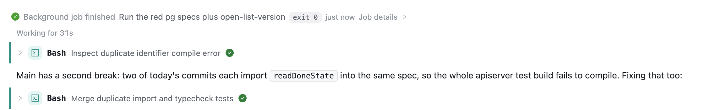
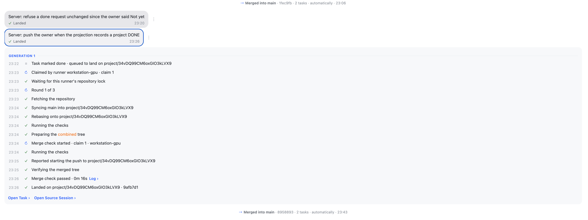
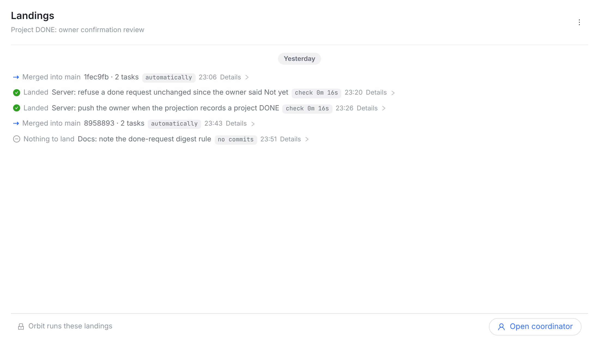
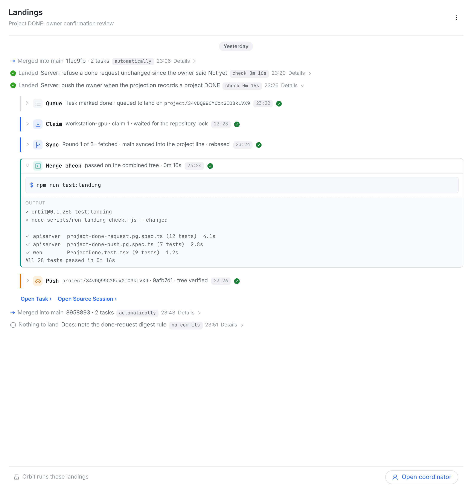
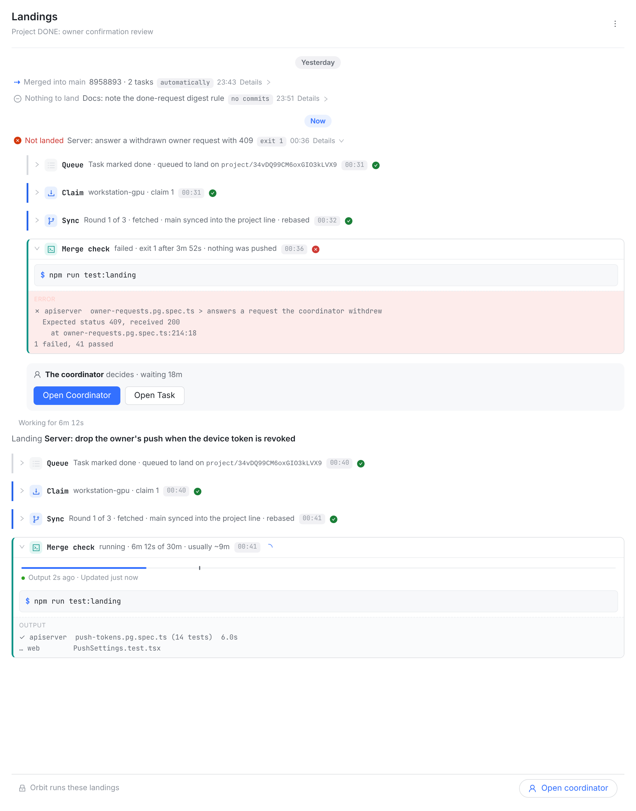

owner 11-11：「图 1 的 landing 效果，是否可以和图 2 里的聊天效果保持一致的 UI 效果，先给我设计图」。
做法：不加新部件，只用会话里已有的三样——后台任务那一行（bgwake：标记 · 灰字 · 名字 · 小胶囊 · 时刻 · Details ›）、工具行（chat-tool-card：图标块 · 粗体名 · 说明 · 状态）、回合头（Working for …）。改后的三帧是真实 web 控制台截图：会话页本身，换上落地的内容，用的就是会话的 class 和样式。英文是上线文案，中文是说明；任务名照你的截图。



check 0m 16s 胶囊 · 时刻 · Details ›。和会话里 ✓ Background job finished · 名字 · exit 0 · just now · Job details › 一个样。automatically · 时刻；点开是回执。
$ 命令 和 OUTPUT（失败是红底 ERROR）。原来的 Log › 不再单独跳。
| 东西 | 现在 | 改后（会话里已有的部件） |
|---|---|---|
| 一次落地（收着） | 灰色气泡：任务名 + ✓ Landed + 时刻 | bgwake 行：✓ Landed · 任务名 · check 时长胶囊 · 时刻 · Details › |
| 合入 main | 居中一行 | 同一种行：⇢ Merged into main · sha · N tasks · automatically · 时刻 |
| 点开的记录 | 灰底面板里 15 行时间线（时刻 · 图标 · 句子） | 5 个工具行（Queue / Claim / Sync / Merge check / Push），每行可再点开看原来的几行；检查的输出像 Bash |
| 等决定的 | 状态卡（红框） | 红 ✗ Not landed 行，展开带错误输出 + 谁来定 + 两个门 |
| 正在跑的 | 状态卡（预算条、活跃度） | Working for 回合 + 工具行，当前步转圈，预算条放进那一步里 |
| 不变 | 日期胶囊、标题栏、底栏、长按 / 右键菜单、数据和接口（只换画法，服务端不动） | |
check 0m 16s（推荐，像 exit 0），还是推上去的 sha 9afb7d1。要动的文件：src/web/src/components/ProjectLandingsWindow.tsx（行、步骤分组、Now）、src/web/src/lib/landingSession.ts（把时间线并成步骤）、index.css（少量，复用 bgwake、chat-tool-*），及其测试。